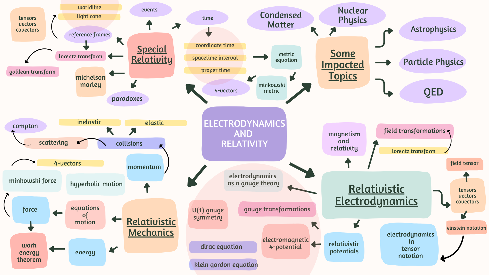

A Pedagogical Study of Relativistic Electrodynamics
A resource for understanding and visualizing topics in electrodynamics and relativity. Created as a final project for PHY 352L Classical Electrodynamics II at UT Austin under Prof. Michael Downer.
Content Overview
Interactive Visualizations


Main Topics
Special Relativity
Foundational concepts in special relativity including Michelson-Morley experiment and relativity paradoxes.
Relativistic Mechanics
Mechanics in the framework of special relativity.
Relativistic Electrodynamics
Exploration of electrodynamics within the framework of special relativity.
Electrodynamics as a Gauge Theory
Understanding electrodynamics from a gauge theory perspective.
Applications
Practical applications and demonstrations of relativistic electrodynamics principles.
Created by students at UT Austin | View on GitHub
Licensed under the terms specified in the LICENSE file